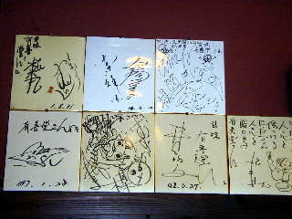
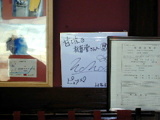
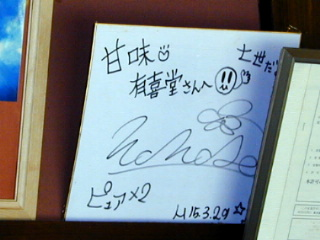
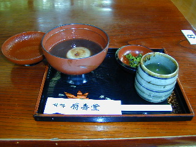
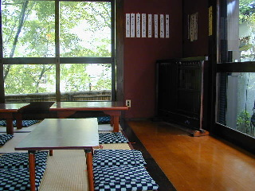
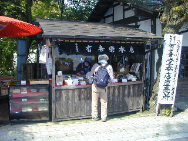
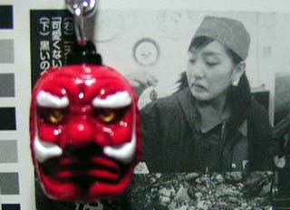

| ☆ＰＡＲＴ２ | |
 |
下界に下りて世俗の象徴コンビニで電池を購入。 カメラを復活させて、いざ最終目的地、 高尾山の至宝と呼ばれる七世さま直筆の書が所蔵されている 「甘味処 有喜堂」の店内に潜入いたします。 |
|  | 入口を入った正面、レジ背後壁上部に色紙が掲げてあります。 れれれ？梅図かずおの色紙はありますが、 七世さまのものが見当たりません。 そんなバカな！いったいどうしたことでしょう。 秋葉原や神保町界隈を拠点に活動するという 一部のカルト的信者が持ち出してしまったのでしょうか？ |
|  | もういちどよく見ると、あった！ありましたよ！ 脇の営業許可証の陰に隠れたような位置に発見しました。 ピュアピュア撮影時に記されたとされる七世さま直筆の書です。 あの〜・・・、 もう少し良い位置に掲げていただけないものでしょうか・・・ |
|  | 平成１５年３月２９日 七世さま高尾山御来訪 の際に自らの御名前を記された貴重な書です。 この日のインタビューで「この１年間で素晴らしく変わります。 見たことないナナセを見せます！」と力強く天てれリーダー としての決意表明をされた七世さま。 この美しく瑞々しい筆致の中に そのあたりの心情が表現されているようではありませんか。 いずれこの書は貴重な文化遺産として 後世まで永く語り継がれていくことでしょう。 |
|  | 七世さまがお餅をほおばるショットを 披露してみせた「おしるこ」です。 ４５０円なり。美味しゅうございました。 |
|  | 七世さまが撮影の際座っていた位置がここ。 白いワンピースに、頭に白いリボン。 ・・・可憐だ。 |
|  | これで七世さまの書を求めての、 高尾山巡礼の旅は終わりです。 この旅を通じて、頭の中のモヤモヤが少し晴れて、 自分が一歩前に進めたような気がします。 やはり七世さまの霊気に触れたことによる功徳でしょう。 ありがたや、ありがたや。 インタビューで「現実を受け止めます」と宣言した七世さま。 私も自分の現実を受けとめて明日からの生活に備えようと 高尾まんじゅうを買って家路についたのでありました。 |
|  | これはケーブルカーの高尾駅近くの売店で 「可愛くないからいらな〜い」と七世さまから嫌われてしまった ボブ・サップ似の天狗のキーホルダーです。 泣きべそをかいていたので私が代わりに買ってあげました。 七世さまは常に無償の愛を与えてくれるわけではありません。 つらくとも生きろ、現実を受け止めろという 七世さまのメッセージなのでしょうか。 おしまい。 |